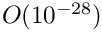
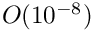
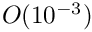
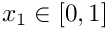
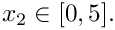

The purpose of this tutorial is to demonstrate the adaptive solution of solid mechanics problems using unstructured meshes generated by oomph-lib's inline unstructured mesh generation procedures. The use of these methods for solid mechanics problems required no additional effort on the part of the user and the setup is essentially the same as that described for unstructured solid mechanics without mesh adaptation. Lagrangian coordinates are projected between meshes in the same way as all other field variables, Eulerian coordinates and history values, see the description in another tutorial.
The solid mechanics problem described here can be regarded as a sub-problem for the
unstructured adaptive fluid–structure interaction tutorial. In addition, we can use the problem to assess the errors incurred when projecting the solution between different meshes.
The problem
An elastic bar is fixed at the base and loaded by a constant pressure on its left-hand side. The pressure load is increased and then decreased so that at the end of the simulation the bar should return to its undeformed position. The strain energy in the final configuration is a measure of the projection error because if there were no projection at all it would be exactly zero (or certainly zero to less than machine precision).

Results
The animation shown below illustrates the solid's deformation and illustrates the adaptation of the mesh as the load changes.
The initial strain energy is , and the strain energy in the final configuration after the external pressure has been reset to zero, but the mesh has been adapted, is . The strain energy at the maximum deflection is .
Global Physical Variables
We define the various physical variables in a global namespace. We define Poisson's ratio and prepare a pointer to a constitutive equation.
Next we define the pressure load to be applied at the left-hand boundary,
The driver code
The driver code consists of essentially the same code repeated for three different formulations of solid mechanics: (i) (compressible) displacement only; (ii) (compressible) displacement-pressure; and (iii) incompressible displacement-pressure. We shall describe the code only for the first formulation.
Initially, we specify an output directory and instantiate a constitutive equation. (Recall that the single-argument constructor to the GeneralisedHookean constitutive law implies that all stresses are non-dimensionalised on Young's modulus  ).
).
We then open an output file for the strain energy, create the Problem object using a displacement formulation of the equations and output the initial configuration.
Finally, we perform the parameter study by slowly increasing and then reducing the pressure on the left-hand boundary. Note that one round of mesh adaptation is specified for every Newton solve.
The Problem class
The Problem class has the obvious member functions as well as a function to set whether the material is incompressible and a function to compute the strain energy of the elastic body. The class provides storage for the two sub-meshes: the bulk mesh of 2D solid elements and the mesh of 1D traction elements that will be attached to the left-hand boundary. In addition, storage is provided for the polygon that represents the initial outer boundary of the solid body and a boolean flag that is used to specify whether the material is incompressible or not.
The Problem constructor
We begin by building the closed, piecewise linear boundary of the undeformed solid body ,  The boundaries are labelled anticlockwise with boundary with the left-hand boundary being boundary 0, see the sketch above. This process is a simplified version of the construction used in another tutorial.
We next construct an error estimator and specify the target errors and element sizes.
We output the boundaries, construct an empty traction mesh and combine the bulk and traction meshes into a global mesh.
Finally we call actions_after_adapt(), which constructs the traction elements, sets the boundary conditions and completes the build of the elements, and then we assign the equation numbers
Actions before adaptation
The actions_before_adapt() function simply deletes the traction elements and clears the storage in the face mesh.
Actions after adaptation
The function actions_after_adapt() first builds the traction elements adjacent to the left-hand boundary (boundary 0) and rebuilds the global mesh. The constant_pressure() load function is passed to each of the traction elements.
Next, the boundary conditions of a fixed base (boundary 3) are set. These must be reset every time after an adaptation because completely new nodes are generated.
Finally, the constitutive law and, if required, incompressibility flag are passed to the bulk (solid) elements. Again, this must be performed after every adaptation because a completely new mesh is generated.
Computation of the strain energy
The strain energy is computed by looping over all elements in the bulk mesh and adding their contributions to the potential (strain) energy.
Post-processing
The post-processing routine outputs the deformed domain shape and the applied traction. In the spirit of continuing paranoia we also document the domain boundaries. It is exactly the same as in the related non-adaptive unstructured solid tutorial.
Comments and Exercises
Exercises
- Examine the changes in strain energy under variations in mesh refinement tolerances and number of intermediate steps between the undeformed and maximally deformed states.
- What happens if the Lagrangian coordinates are reset after every adaptation? Why?
- Modify the problem so that compression is from the upper surface, rather than the left-hand side. What happens when the material is incompressible?
Source files for this tutorial
- The source files for this tutorial are located in the directory:
demo_drivers/solid/unstructured_adaptive_solid/
- The driver codes are:
demo_drivers/solid/unstructured_solid/unstructured_adaptive_solid.cc
PDF file
A pdf version of this document is available. \